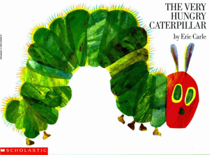
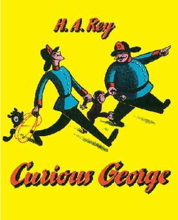
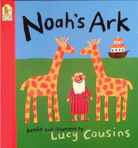
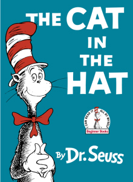
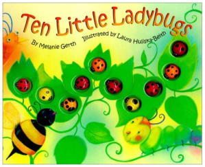

5 Halloween
Infant Costumes Inspired by
Beloved Bedtime Books
Don't just do Halloween infant costumes for the sake of "Baby's First Halloween".
Show off his emerging personality! Use his well-loved, well-chewed boardbook lying next to the nursery rocking chair as inspiration!
Translate his favorite book into a Halloween memory.
I've taken 5 of the most beloved boardbooks in my home and brainstormed some DIY Halloween infant costume ideas for you craft-happy mamas out there.
And for those of you who, like myself, think
the best crafts are those finished by someone else, I've researched "buy on the fly" options for you to happily browse.
Yes, some of those (but not all) are affiliate links. They have no affect on the price you pay, and the company will dribble a few thank-you pennies to me at the end of the month.
It's not enough to buy a house in the Hamptons, but it does slip nicely into my Caribou Coffee Jar-of-Happiness. My addiction thanks you.
Five Popular Boardbooks Re-Made for Halloween Infant Costumes
-
Here's the short-list of the board books I'll be discussing.
- The Very Hungry Caterpillar
- Curious George
- Noah's Ark
- The Cat in the Hat
- Ten Little Ladybugs
For each book, I've split the ideas into two sections. The "Make It in 15" (minutes) option and the "Buy It in 5" (minute) option.
These are my kids' favorite boardbooks. You can use my ideas, or leaf through your baby's favorites for Halloween infant costumes of your own.

A Very Hungry Caterpillar
Ate This Costume
Is there a nursery in America that doesn't have this book?
If you've just proven me wrong, I highly recommend you check it out at the library. I guarantee your infant will love it!

The Very Hungry Caterpillar
is the undisputed King of Baby Literature.
Bright colors, a cute story, and (best of all) pages with holes.
(My Isabella LOVES sticking her pudgy little fingers into those caterpillar bites!)
Be warned, though! Reading this will get your stomach growling and make you crave a lollipop. 
The "make it in 15 minutes" version...
- Cut the legs off the two pairs of panty hose and stuff them evenly with fiberfill.
- Cut the legs off the two pairs of tights and insert the stuffed pantyhose inside each leg.
- Form circles with the tights so they fit comfortable around your infant's tummy, securing the ends with glue or sewing them closed. (Older babies may have 4 tubes, younger babies only 2.)
- Lay the circles on top of each other and glue them together.
- Dress your infant in a neutral or green-colored jumper.
- Place the tubes around your baby's tummy. If they're too loose, attach green ribbon across the top like suspenders.
- For the antennae, curl one end of the pipe cleaner into a circle and glue a pom-pom on the end. Glue the curled ends to a red stocking cap.
For a newborn baby, dress her in dark green and swaddle her with muslin (the cocoon). Cut out green and yellow circles from felt and glue them on the front of a red stocking cap.
What You Need
*2 pairs of panty hose
*Bag of Fiberfill
*1 pair of bright green tights
*1 pair of dark green tights
*2 pipe cleaners
*2 large pom-poms
*Fabri-Tac glue
For older babies, follow these instructions:
- This suggestion is a modification of a costume found at www.parents.com
If she's old enough for solids, bring some snacks for her to munch. After all, she is a very hungry caterpillar... (Don't forget to pack a lollipop for yourself!)
The "buy it in 5" version...
For storybook purists out there, Eric Carle actually has so-called "Officially Licensed Replicas" available in select online stores.
(They're very serious about their hungry caterpillars. These are official Halloween infant costumes.)
They ain't cheap, sister. But then again, it's absolutely obvious what she's supposed to be and it'd make an awesome milestone portrait!
 |
 |
 |
Channeling His Inner Curious George
Curious George is an icon of adorable naughtiness.

Only Curious George can make
disobedience adorable.
The plots are pretty darn predictable, which is perfect for developing minds.
- George is told not to do something.
- George can't handle NOT doing it, and so succumbs to his curiousity.
- Diaster prevails. (Balloons fly, baby bunnies get loose, toy store is destroyed...)
- Annoyed adult realizes that it's really okay that George caused all this rucus.
- Smiles and hugs all around.
Ahhhhhh, stories... In the real world, those little Curious Georgettes would be standing the corner while I gritted my teeth, counted to ten, and prayed for patience.
Still, curiousity leads to good mental development. The curious mind is always learning something new.
Channel the spirit of George with these Halloween infant costumes.
The "make it in 15 minutes" version...
- Cut two large monkey hears out of dark brown felt. Cut smaller ears out of light brown felt and glue them together.
- Place them onto poster board and cut out the shapes. Fold the bottom quarter-inch over and glue that part to a hat or brown hooded sweatshirt so they stand up.
- Cut out monkey-feet from a paper bag and tape them on the top of your infant's shoes.
- Print out the Curious George Logo and attach it to a red or yellow t-shirt.
- Dress him in brown sweatpants, brown socks, the shirt with attached logo and hat/sweatshirt with ears.
- For the tail, stuff a panty hose with fiberfill.
- Roll up a yellow piece of construction paper into a cylinder, twisting the bottom into a cone shape. Tape it so it stays in shape.
- Cut out a circle of yellow paper that's wider than the cone and attach the two with tape. Cut a black band of construction paper and add that around the base of the cone, above the rim.
- You can attach this mini-hat on top of a stocking hat or hoodeded sweatshirt.
- Dress your baby in yellow, with black socks or boots and a black ribbon tied around the tummy as a belt.
- Put a stuffed monkey inside the stroller and he's good to go!
Make Curious George:
What You Need
*Dark brown felt
*Light brown felt
*Poster board
*A brown hat
*A paper bag
*Panty hose
*Bag of Fiberfill
Make The Man with the Yellow Hat:
What You Need
*Yellow construction paper
*Black construction paper
*Yellow clothing
*Black boots
*Black ribbon
*A stuffed monkey
The "buy it in 5" version...
Did those instructions make your eyes glaze over? $20 can pony up the real deal.
Use coupon code Save-15 on $75 or more and take 15% off your total. Only for early orders! Expires September 30th, 2011.
This coupon is valid only for the Curious George costume below, not the Man in the Yellow Hat.I couldn't find any Halloween infant costumes of The Man in the Yellow Hat, but I did find a great replical perfect for for Dad.

An Ark-Full of Halloween Infant Costumes
The story of Noah is the first Bible story we introduce to our kids as babies.

Noah's story is a great reminder of God's
redemptive plan in progress.
Your cutie is way to young to appreciate the deeper meaning of God's redemptive plan, but she sure will love pointing and imitating all the animals!
Using the Noah's Ark theme for the family is simple.
Have Dad dress as Noah, Mom as Noah's wife, and the kids as animals. Pair them up or have each carry matching stuffed animals.
The "make it in 15 minutes" version...
There are lots of different ways you could do the Noah's Ark theme in Halloween infant costumes. You just have to get those creative juices flowing! (Let me recommend a large french vanilla latte.)
What You Need
*Grey eyeliner
*Robe/striped shirt
*Brown sandals
*Cardboard
*Remnant pieces of laminant wood
*Stuffed animals
For example, you could make your baby Noah.
Use a gray eyeliner to pencil in a beard and dress him in a robe (or striped shirt) with sandals. A white baby wig would be hilarious.
Duct-tape some cardboard around a wagon, and then glue on remnant pieces of laminant wood tiles at your local hardware store. Ta-da! You have an ark!
Have little baby Noah sit in the "ark" and fill it with his favorite stuffed animals. This lets him play while you walk from house to house!
Or you could have your baby be one of the animals instead, having the matching pair ride with him in the stroller or be carried house to house.
The Curious George monkey instructions above can easily be modified for a bear, horse, dog, cat...Are you getting excited with all the possbilities? They're endless!
The "buy it in 5" version...
The possibilities for animal Halloween infant costumes available for purchase are as deep as forty days of rain. I've fished up a few for you to ponder. As an extra bonus, all of the costumes below include the other half of his "pair".

-
These Halloween infant costumes are high-quality and extremely intricate in design. The stuffed animals (so you have two-by-two) are all included.
That said, this high level of craftsmanship for Halloween infant costumes is more expensive. The kangaroo is $50, and the monkey and panda are both Tom Arma Collectibles and sell for $60.
If you like the monkey and Panda costumes but $60 is a bit too steep, use coupon code 10TA2011 and take off 10%. You're welcome!
 |
 |
 |
For you moms out there who love a good deal, the three Halloween infant costumes you see above are all on clearance! The meerkat is $10, the lion is around $16, and the 4 baby elephant costume is $20. Clearance means there are a limited number! Once they're gone, they're gone, so hurry!
Why the Cat in the Hat Used to Freak Me Out
(And How I Was Cured)
Let's review the story plotline, shall we?
A stranger, dressed only in a red bow-tie and striped top hat, convinces two kids (who are home alone) to let him inside so he can have "fun" and destroy the whole house while mom's away.

The somewhat disturbing, but
still well-loved Cat in the Hat.
Thank you, Postmodernism, for turning me into a hypersenstive freak whose brain is so wired for political correctness that I actually found myself wondering if this was okay to read to kids.
Whaaaa?!?
Dr. Seuss.
Inappropriate for kids.
Fortunately, my wonderful husband correctly shamed me and it is now a regular (and beloved) part of the bedtime rotation.
(As is a 5 minute speech on Stranger Danger.)
Here's how to turn your blissfully innocent child into a blissfully innocent American icon.
The "make it in 15 minutes" version...
What You Need
*White felt
*Red ribbon
*Safety pins
*Washable eyeliner
*Measuring tape
*Poster board
*Red felt
*Fabri-Tac glue
Cut out a giant oval from white felt.
Using some thick red ribbon, tie a ribbon and hot glue it to the top of the white felt.
Safety pin the white felt onto a black turtleneck.
Dress him in black pants, socks, and shoes.
Use washable eyeliner to paint on whiskers and blacken the tip of his nose.
Measure the circumference of your infant's head with measuring tape.
On poster board, draw that circle, and then a cocentric circle 3 inches wider for the brim.
Cut out the inner circle, saving it for the top of the hat later.
Cut a rectangle from poster board, the long side being around 12-17" long. Roll it up until it matches the circumference of your baby's head.
Tape the rim of the long piece onto the brim of the hat and the head circumference piece to the top. You should now have a top hat made of poster board.
Glue red and white rectangles of felt in a striped pattern around the hat.
For the body and face:
For the hat:
The "buy it in 5" version...
If all that glue is making you "too happy", you can have these Halloween infant costumes made and sent directly to you! (Don't you just love the Internet?)
 |
 |
Use coupon code Save-15 on $75 or more and take 15% off your total. Only for early orders! Expires September 30th, 2011.
A Swarm of Ladybugs on the Stroller
I'm sad to report that one of our absolute favorite books, Ten Little Ladybugs is fast becoming a lost relic.
 Ten Little Ladybugs is on its way to extinction.
I tried to find it a few months ago for a shower gift.
I was shocked not to find it at my normal haunts (B & N, Walmart, Target...).
Eventually I tracked it down and bought it
through a book dealer
at Amazon.
Why all the effort?
Because this book is a playground between two covers.
Not only does it have those addictive fat-finger holes (like in Hungry Caterpillar), there are 3D ladybugs on all the pages.
My Isabella will spend minutes (which feel like hours, since it's Bella) of focused concentration, convinced that if she could just finagle her chubby fingertip around a ladybug it would pop off, allowing her to place it in her mouth where it (naturally!) belongs.
(Don't worry. They must have used NASA technology because despite all this effort over the past year, they still haven't budged.)
Capture this new ladybug obsession with these Halloween infant costumes.
The "make it in 15 minutes" version...
- Dress her in black pants and a black sweatshirt with black socks and shoes.
- Cut out "wings" out of red felt and fix onto shoulders with safety pins.
- Cut out different sized dots on black felt and glue them onto the red felt.
- Using a stiff headband, glue on black pipe cleaners with pom-poms glued on to the tips.
If you're handy with a sewing machine, I'm confident you can find hundreds of patterns out there to fashion your own perfect ladybug Halloween infant costumes.
Happy sewing.
For the rest of us, God has provided the miracle of felt and Fabri-Tac.
What You Need
*Red felt
*Black felt
*Safety pins
*Stiff headband
*Pipe Cleaners
*Red pom-poms
*Fabri-Tac glue
*Black fabric marker
Make the nine other little ladybugs out of the extra pom-poms and fabric markers and attach them with pins, glue or tape all over the stroller. (BTW, this is a great craft for older siblings!)
This amazing custom-made stroller costume at Etsy would also be a great themed addition!
The "buy it in 5" version...
Here are three different designs for hassle-free adorable Halloween infant costumes. The first is bunting style for younger babies and is $19.
The second fuzzy cuddly ladybug is $40, the third one is a Tom Arma Heirloom Costume. (Which makes it $60.)
Here's a hint: You can take 10% off that Tom Arma with code 10TA2011.
The very last infant ladybug costume is an exclusive design for $25.


Halloween Infant Costumes:
Turning a Little Moment
Into a Big Memory
By coordinating his favorite bedtime stories with his Halloween infant costume, you're paving a memory path for later on.
For example, ten years from now, when you're all eating popcorn and watching family videos, the Curious George costume you picked out for his first Halloween will bring back a flood of forgotten memories.
How he went through "that stage" when George was his favorite toy, his first word, and how he loved to make the monkey noise as you were reading and giggle his little head off so much that you couldn't finish the book.
These are the little memories we often forget to record in the baby memory book, but are still hovering at the edge of our subconscious, just waiting for the right trigger.
These Halloween infant costumes can provide that trigger.
Related Articles…
♥ How Tom Arma Halloween Costumes Become Photographic Masterpieces for Your Nursery
♥ Flitterific Baby Fairy Costumes: Which Matches Your Little Pixie?
♥ 14 Newborn Costumes that Actually Fit Newborns
♥ A Baby Yoda Costume Must You Have


 7 Ways to Determine an Ear Infection
7 Ways to Determine an Ear Infection
 5 Tips to Fight the Cold Crusties
5 Tips to Fight the Cold Crusties
 Free $32 Nursing Cover with code ONEFREE!
Free $32 Nursing Cover with code ONEFREE!

 Does a Belly Binder help C-Section Recovery?
Does a Belly Binder help C-Section Recovery?
 This Month's Coupon Codes for Gap, Children's Place, and Others
This Month's Coupon Codes for Gap, Children's Place, and Others

I just subscribed to the site, and I'm very happy I did. I have worked in the medical field for several years and love to have good resources for when things come up...
~ Crystal S.
What a great site and thanks for having it available!
~ Bernadette W.
I'm very excited to start receiving the newsletter. I've checked out your site a couple times and I loooovve how it's arranged, your language, and tips - it's great!
~ Emily N.
Heather, I can't express how happy I am I discovered your site!
~ Liza T.
Thank you Heather, for your wonderful newsletter. There is always something new!
~ Desiree T.
I'm a 1st time young mom, 23 and single, so I have found very very helpful...I can't seem to stop myself telling everyone I know about you, some thought you were my mom!
~ Vuyiswa N.
Your website is very helpful and I discovered a couple of great online stores. 'Cause I'm not a big reader, it is very nice that I can find the most important information through your
website.
~ Tonya G.
Thanks Heather! Your Milestone eBook is SO detailed and so correct. My son is doing all or most of the things and many are not mentioned in the usual books/sites. Great job and keep it up!
~ Anwesha C.
Thanks so much for creating such an AWESOME website. I really appreciate your sense of humor and real writing style.
~ Andrea Z.
My baby refused all bottles until you showed me the MAM bottle. Thank you so much for the recommendation. I wouldn't have known about them if not for your website.
~ Jennifer at Sweet Lilly Confections


Copyright © 2007-2011. All rights reserved.
Remember...when in doubt, give Doc a shout!
New! Comments
Have your say about what you just read! Leave me a comment in the box below.